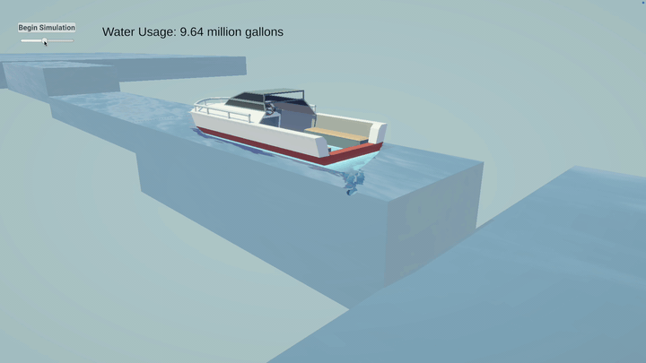
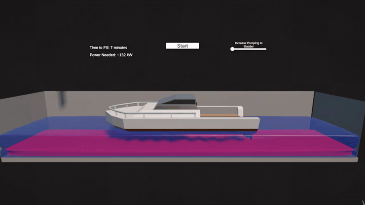

Georgia Tech Research Institute
May 2026 - Aug 2026
Research internship in robotics, perception, and open-world robot memory.
A robotics research project focused on open-world memory for embodied agents. The goal is to help robots retain, retrieve, and reason over observations from changing environments instead of treating every scene as isolated. This project sits at the intersection of robotics, perception, and long-term autonomy. More details, demo media, and links can be added here as the project becomes shareable.
A human-machine interaction project for controlling a prosthetic hand using EMG signals. The system combines signal processing, machine learning, embedded programming, and wireless control to make prosthetic motion feel more intuitive. I work on the software pipeline from data acquisition and model development to real-time control behavior. The project is developed through the Laboratory for Interaction of Machine and Brain at UCF.
An augmented-reality bowling analytics project using Meta glasses, lane segmentation, ball tracking, and AR overlay concepts. The system is intended to understand the lane, track the ball, and surface useful feedback directly in the bowler's field of view. This project combines computer vision, spatial perception, and real-time user feedback. Demo media and implementation notes can live here once the project is ready to show.


Jan 2025 - Apr 2025
A Department of Defense-sponsored project developed through UCF's Entrepreneurship for Defense course in collaboration with SOUTHCOM, DIU, NSIN, and a multidisciplinary student team. I built a C# Unity simulation of Panama Canal operations and a Python analysis tool for throughput modeling. The work estimated a 10% performance gain and more than $250M in annual savings from proposed water-conservation changes.
May 2026 - Aug 2026
Research internship in robotics, perception, and open-world robot memory.
Dec 2025 - Present
Quality Engineering automation work involving industrial robotics and optical and photonic sensors.
Jul 2025 - Present
Undergraduate research on intelligent robotic control systems, EMG signal processing, embedded programming, and prosthetic hand control.
B.S. Computer Science, Aug 2028
IT Intern, Apr 2025 - Jul 2025